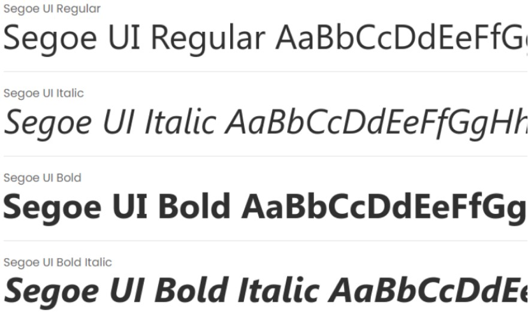
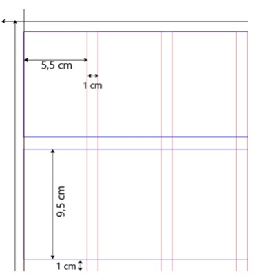
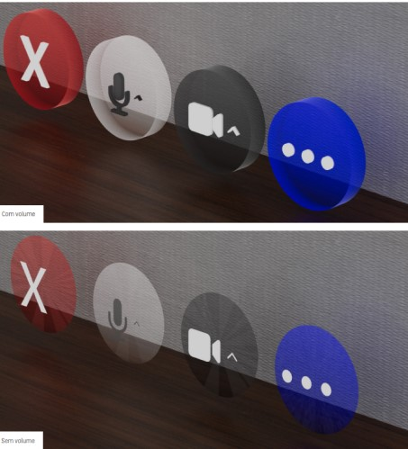
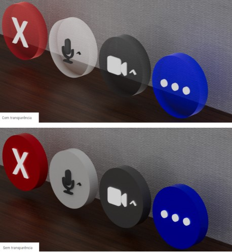
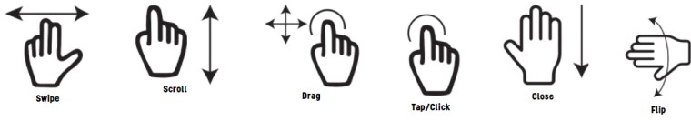

Hoje tem Doce
O objetivo do projeto foi se tornar um estudo na criação de Interface Gráfica Espacial Volumétrica,com a
criação de elementos gráficos, como por exemplo botões, janelas, layout de texto, barras, entre outros,
que se encaixe no dia a dia, com maior legibilidade, interatividade e que tenha uma melhor interação nos
espaços pequenos e grandes, com pouca e muita luz, sendo esses os primeiros fatores a serem
considerados.
Para isso levou-se em consideração a forma como esse modelo pode acompanhar o avanço tecnológico e ter o
benefício do volume e posicionamento espacial.
Processo Criativo
Para desenvolver a interface adotei alguns princípios básicos:
Visibilidade e affordances que significa que as pessoas precisam ver apenas o que é importante, isso
ajuda a manter a interface limpa e fácil de entender, e também que, o design dessa interface deve
fornecer pistas de como esta deve ser utilizada.
Um bom modelo conceitual que se baseia em que o usuário deverá perceber naturalmente como fazer uma ação
e o que vai acontecer depois que ela for feita.
Bons mapeamentos, que são aqueles que são naturais e que aproveitam analogias físicas e padrões
culturais, levando o usuário ao entendimento instantâneo.
Feedback, que se baseia em que o usuário precisa receber resposta do sistema depois que alguma ação foi
realizada.
Tipografia
Para escolher a tipografia utilizada na interface, foi pensado em alguns parâmetros:
Legibilidade, como em uma interface é preciso usar a tipografia em diferentes tamanhos, ângulos e
posições, foi necessário escolher uma tipografia que tivesse uma boa legibilidade.
Design, como a interface tem um estilo mais voltado para o futurismo, foi necessário escolher uma
tipografia com design neutro e que possuísse diversos estilos , como negrito, itálico, semibold, etc.

Grid
Para garantir um bom posicionamento e distribuição dos elementos na interface foi criado um grid similar
aos utilizados em interfaces web e de aplicativos, onde há uma distribuição de linhas e colunas com
espaçamentos e tamanhos pré-definidos.
O Grid possui 12 colunas por N linhas, a depender da interface que será desenhada.

Cores
No Design dos elementos, foi considerado sempre um cenário com elementos claros e outro com elementos
escuros, porém a ideia é que os elementos permitam uma vasta gama de cores dependendo da identidade,
marca, propósito, etc. da aplicação que será criada.
Contudo, uma boa prática é uma atenção especial em relação ao contraste, ou seja, botões escuros
deveriam ser utilizados com textos claros para garantir a leitura.
Volume
Da mesma forma que foi observado nas referências, ao desenhar os elementos ficou evidente a necessidade
de que esses elementos possuíssem volume, uma vez que uma projeção de elementos chapados prejudicam a
percepção de posicionamento espacial.
Outra característica observada é que elementos com volume dão maior percepção de serem táteis,
facilitando a aplicação dos princípios de mapeamento e feedback.
Também foi observado uma melhor leitura em elementos que possuem volume, pois este ajuda a dar foco no
elemento e não no que está no fundo.

Transparência
O design dos elementos é transparentes ou translúcidos por duas razões principais:
Primeira: pensando em uma projeção que se baseia em luz, dificilmente os elementos seriam 100% opacos,
além disso, os elementos sem transparência prejudicam a percepção do usuário e sua habilidade de
diferenciar o que é real do que seria a projeção, afetando sua capacidade de interagir com os elementos.
Segunda: a interface ser semi-transparente garante não só uma melhor composição com o mundo real como
resulta em uma interface mais agradável visualmente.

Gestos
Para utilizar a interface, assim como em uma interface mobile, idealmente alguns gestos deveriam ser suportados, a fim de prover uma melhor interação para o usuário. São eles:

Elementos
Foram criados 16 elementos, sendo eles:

Porva de Conceitos
Para garantir que os elementos gráficos funcionassem aplicados em uma interface de usuário, esbocei então uma tela como prova de conceito, desta forma eu poderia ver tanto o design dos elementos quanto a composição entre eles.
Clique na imagem para acessar o vídeo